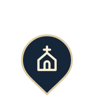
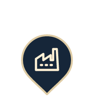

Repères de carte
Pictogrammes des catégories et états de découverte utilisés sur la carte.
Temple et vestiges

Édifice religieux
Patrimoine industrielAutre patrimoine
États réels conservés
À découvrir
À portée
Découvert
Sélectionné
Découvert et sélectionné
Le statut de vérification est indiqué dans la fiche du lieu.
Regroupement
8
Dans l’application, le chiffre indique le nombre réel de membres du groupe. Toucher pour agrandir ou choisir un lieu.Dans Options de la carte → Rendu des lieux : version et nombres réels de lieux isolés et regroupements de la zone.